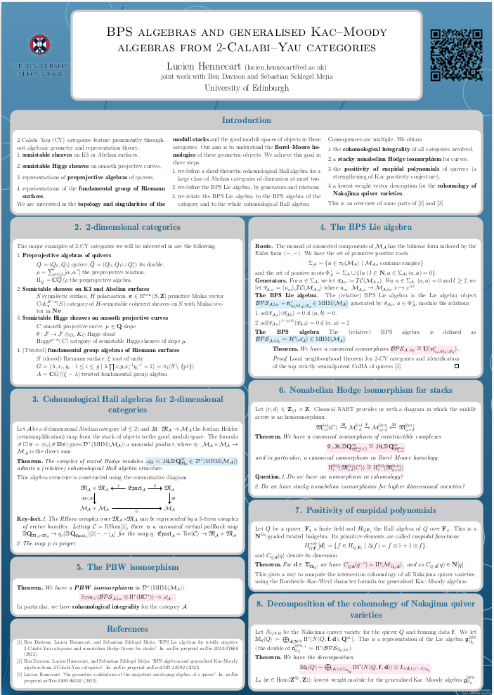

The aim of this page is to give a virtual presentation of a poster I prepared to present at the conference "Derived Categories, Moduli Spaces, and Counting Invariants" held at Imperial College London, July 3-7, 2023. This poster presents a selection of results from our work in collaboration with Ben Davison and Sebastian Schlegel Mejia, arXiv:2212.07668 and arXiv:2303.12592.
- Introduction
- 2-dimensional categories
- Cohomological Hall algebras for 2-dimensional categories
- The BPS algebra
- The PBW isomorphism
- Nonabelian Hodge isomorphism for stacks
- Positivity of cuspidal polynomials
- Decomposition of the cohomology of Nakajima quiver varieties